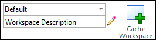
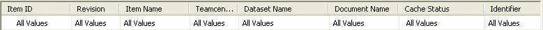

Activity: Manage the local cache
In this activity, you will learn how to use Cache Assistant to:
-
Check documents in and out of Teamcenter.
-
Download documents to the local cache.
-
Filter the display of the contents of your cache.
-
Delete documents from the cache.
-
View cache summary information.
-
Use the Cancel Check Out command to recover unchanged items from Teamcenter.
Instructions for loading the activity files are found in Activity data set and configuration requirements. The activities assume ISO templates are loaded.
Start Solid Edge with Teamcenter enabled.
From the File menu, choose Manage→Cache Assistant and log into Teamcenter.
The Cache Assistant dialog box is displayed.
Click the link at the top of the Cache Assistant dialog box that displays your Teamcenter login information.
Name [User ID]-Group/Role [Database]
The User Settings dialog box is displayed. In the Session page, you can change groups or roles provided you are part of more than one group or role in Teamcenter.
You can only change the group or role when there are no documents open in Solid Edge.
Click Cancel to dismiss the User Settings dialog box without making any changes.
-
Locate the workspace information in the Workspace group in the ribbon at the top of the dialog box.

There are two types of workspaces:
-
Cache Workspace - the location for the local copy of your document that is managed by Teamcenter.
-
Concept Workspace - conceptual modeling environment. To learn more, see the help topic, Using Concept Workspace to explore design ideas.
In either workspace, you can have more than one workspace named and defined.
Currently, the documents in your Cache Workspace are a part of the Default cache workspace. You can view the workspaces available to you by clicking the arrow to select a different workspace from the list.
-
-
Notice that the first row of the dialog box is used to filter the display of the contents of your cache.
Each column is set to display All Values. All documents that are part of the default cache workspace are displayed in the list.

-
The summary information shows the number of documents in the cache along with the space used by the documents.
-
When the view of documents in Cache Assistant is filtered, the summary displays the number of files shown in the filter and the total number of Solid Edge files in the folder along with the disk space used by the documents in the view.
-
If any documents are selected in Cache Assistant, the summary information displays the number of files selected and the disk space used.
-
When no documents are selected in Cache Assistant, the number of Solid Edge documents in cache displays with the amount of free disk space and the amount of disk space used by the documents in cache.
-
-
Notice that Cache Status provides information regarding the state of the documents in your local cache as compared to the copies held in Teamcenter.
-
Click Update Status Info on the Cache Assistant toolbar.
Most of your documents display a cache status of Up-to-date indicating the version of the document in your cache matches what is in the Teamcenter database.
Right-click documents with a status of Checked Out to You and choose Check-in.
The Upload dialog box is displayed. You have the option to set the action to Check-in or Upload.
Ensure the action is set to Check-in and click Perform Actions.
Occasionally, you will need to clear your project's cache. For example, you would clear your cache when you want to force the local cache to update with the latest information from the database; when you want to free local disk space; or following the completion of a project.
In the Workspace group of the ribbon, click Clear Cache .
When you are prompted, Are you sure you want to delete all the documents from the workspace?, click Yes.
From the command ribbon, click Download .
From the Browse list, select Recently Used Items.
In the Filter Options pane, make sure Files of Type is set to Assembly.
In the Open Options pane, set the Revision Rule to Latest Working.
From the Download dialog box, select revision B of the completed valve assembly, and then click Open.
Any subassemblies or part files referenced by the assembly are also downloaded to the cache.
-
Right-click the item with the Item Name Side Plate, and choose Open.
The part is checked out and opened in Solid Edge.
In PathFinder, select any feature of the part, and choose Delete.
Close the part file and save your change.
The modified document is saved to your local cache, but it has not been checked in or uploaded into Teamcenter. If you determine the change you made is in error, you can cancel the check-in or upload into Teamcenter.
-
On the Upload dialog box, click Cancel .
Do not check the document in or upload it to Teamcenter, but let the modified document remain in the cache only.
-
The item with the Item Name of Side Plate has a Cache Status of Modified.
-
Select the part you modified, right-click, and choose Cancel Check-Out.
-
Click Update Status Info in the ribbon of the Cache Assistant dialog box.
The Cache Status for all items which comprise the assembly are Up-to-date with the exception of the part you modified. A newer version is available in Teamcenter.
-
In the ribbon of the Cache Assistant dialog box, click Synchronize.
The Cache Status for all items which comprise the assembly are Up-to-date.
-
Right-click the top level assembly and click Open.
Notice that by choosing to cancel the check-out of the document, and synchronizing the content of the cache with Teamcenter, the change you made was not saved. You are able to recover the unchanged part from Teamcenter.
-
From the Teamcenter tab, click Cache Assistant.
You can access the Cache Assistant while viewing a Solid Edge file to verify the cache status of an item or manipulate data in the cache.
In the Manage group of the Cache Assistant ribbon, click Check In .
In the Upload dialog box, click Perform Actions.
Close the Cache Assistant dialog box.
Since you checked in an open document, the document is now Read-Only.
Close the document.
You do not need to save the changes.
In this activity, you learned how to start the Cache Assistant and how to use basic operation commands.
Now you will be able to:
-
Filter the display of the contents of your cache to make it easier to locate the items you are looking for.
-
Check documents in and out of Teamcenter using Cache Assistant.
-
Download items to the local cache.
-
View cache status information.
-
Clear the cache for your project.
-
True or False: When referring to the location of the cache, you are referring to a temporary location in the memory of the operating system.
-
You can use the __________ _____________ command on the Cache Assistant shortcut menu to reverse changes you make to a checked out document.
-
What command is useful if you want to work off-line with managed documents?
-
True or False: Clicking Delete All on the Cache Assistant ribbon removes all files from the local cache.
-
Which is the most efficient and recommended configuration for the local cache?
a. A personal cache on the physical disk of the local machine.
b. A personal cache accessed through a mapped network drive.
c. A shared cache location.
d. None of the above.
-
False — When referring to the location of the cache, you are referring to a local folder in the Windows file system.
-
You can use the Cancel Check Out command on the Cache Assistant shortcut menu to reverse changes you make to a checked out document.
-
The Download command is useful if you want to work off-line with managed documents. This command downloads the documents you choose to your local cache so they are available to you when you are off-line.
-
True — Clicking Delete All on the Cache Assistant ribbon removes all files from the local cache.
-
The most efficient and recommended configuration for the local cache is (A) a personal cache on the physical disk of the local machine.